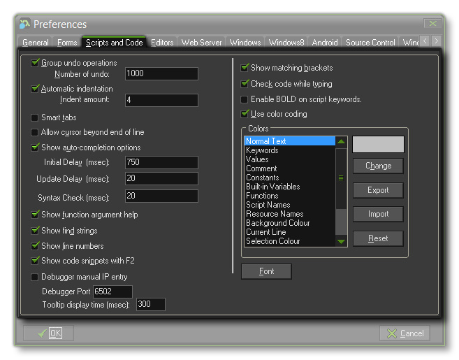

 These settings
relate to the way the built in script and code editor works
(explained in detail in the section about Scripts).
- Group undo operations: When grouped multiple actions (like typing a whole line) becomes one operation for undo.
- Number of undo: You can use this to change the number of "undos" that GameMaker: Studio stores. The default is 1000.
- Automatic indentation: When set Enter and Backspace keys automatically add and remove indents based on the line of code above.
- Indent amount: How much to indent with each tab (in spaces, with the default value being 4).
- Smart tabs: When set tabs go to the position below the first non-empty space in the previous line (automatically indenting the code).
- Allow cursor beyond end of line When checked you can place the cursor at any position in the editor screen, also beyond the end of line (if unchecked this is not possible). This also changes the behavior of the left and right arrow keys.
- Show auto-completion options: When set, help is given, in the form of a pop-up window, in which functions and variables that start with the letters you are typing will be shown.
- Delay (msec): The delay in milliseconds before the auto-complete is shown. Set to 1 for immediate (default 2000).
- Update Delay (msec): The delay in milliseconds before the auto-complete window refreshes (after being shown). Set to 1 for immediate (default 2000).
- Syntax Check (msec): The delay in milliseconds before the syntax checker will check the code you have just written. Set to 1 for immediate (default 750).
- Show function argument help: Checking this option will show the function and its available arguments on the statusbar at the bottom of the editor.
- Show find string: If this is checked then whenever you are typing in a find string, all locations of that string are shown in the editor.
- Show line numbers: Whether the code and script editor should display line numbers (this will affect actions too).
- Show code snippets with F2: When set, pressing F2 will bring up a number of useful code snippets.
- Debugger Manual IP Entry: With this option checked, the debugger will permit you to input an IP to connect to instead of auto-configuring. This option should only be checked if you are having an issue connecting to mobile devices when debugging.
- Debugger Port: Here you can set the port that the debugger uses for communication.
- Tooltip Display Time: This can be used to set the display time (how long they are displayed for for tooltips (in milliseconds).
- Show matching brackets: Whether the editor should indicate matching open en close brackets.
- Check code while typing: When set the code is constantly checked and errors reported.
- Enable BOLD on script keywords: Allows you to have all script keywords in BOLD. Please select a FONT where the width of the BOLD string, is the same as the width of the NON-BOLD string.
- Use colour coding: Whether to use colour coding in the editor.
- colours: Here you can set the colours used for colour coding in the editor (You can also save, load and reset the colours).
- Font Here you can select the font for the editor. Note that only fixed pitch fonts are shown. Also note that only the font and the size are used.